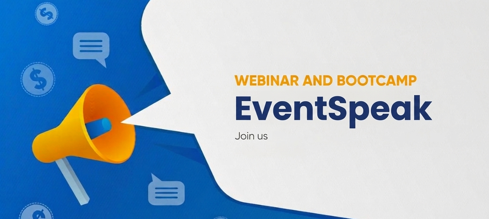

Pengantar

EventSpeak adalah platform digital yang memudahkan penyelenggara, pemateri, dan peserta untuk terhubung dalam kegiatan webinar maupun bootcamp secara lebih terorganisir. Melalui platform ini, pemateri dapat mendaftarkan diri untuk berbagi ilmu, sementara peserta dapat menemukan dan mengikuti berbagai program edukatif sesuai minat.
Di era digital saat ini, kegiatan webinar dan bootcamp menjadi salah satu sarana pembelajaran yang banyak diminati. EventSpeak hadir sebagai solusi untuk membantu pengelolaan kegiatan tersebut, mulai dari pendaftaran pemateri, manajemen event, hingga pendaftaran peserta secara online dalam satu platform.
Highlight
Platform Informasi Webinar dan Bootcamp yang Terintegrasi
Pendaftaran Pemateri
- Pemateri dapat mendaftarkan diri untuk menjadi pembicara webinar atau bootcamp
- Pengisian profil keahlian, pengalaman, dan topik yang dapat dibawakan
- Pengelolaan data pemateri oleh admin atau penyelenggara event
Pendaftaran Peserta
- Peserta dapat mendaftar webinar atau bootcamp secara online
- Informasi lengkap mengenai jadwal, topik, dan pemateri
- Sistem pendaftaran yang mudah dan terorganisir
Manajemen Event
- Penyelenggara dapat mengatur jadwal webinar dan bootcamp
- Pengelolaan daftar pemateri dan peserta dalam satu sistem
- Monitoring jumlah peserta yang terdaftar
Portofolio Pemateri
- Halaman khusus untuk menampilkan profil pemateri
- Riwayat webinar atau bootcamp yang pernah dibawakan
- Bidang keahlian dan topik yang dapat diajarkan